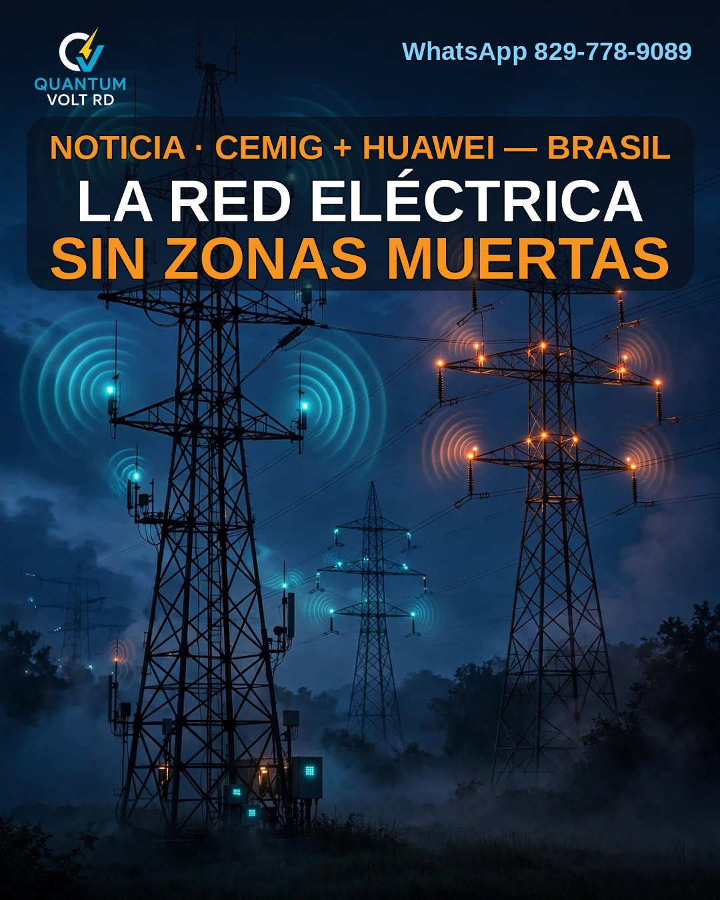

Noticia · 14 de noviembre de 2026
Cemig y Huawei despliegan la primera red privada 450 MHz para el sector energético en América Latina
14 de noviembre de 2026 · Energía · Tecnología

Cemig, una de las distribuidoras de energía más grandes de Brasil, desplegó junto a Huawei la primera red inalámbrica privada de 450 MHz para el sector energético en América Latina. Antes dependían de redes públicas alquiladas que solo cubrían cerca del 50% del territorio: en temporada de lluvias la conectividad de los equipos caía del 90% al 60% y las cuadrillas tenían que viajar a reparar a mano.
Del 50% al 99% de conectividad
Con su red privada, la conectividad de los terminales de distribución subió al 99% y la confiabilidad de las comunicaciones al 99,99%. La red propia elimina las zonas muertas que dejaban las redes públicas alquiladas y permite supervisar y operar los equipos a distancia, sin depender de la cobertura de terceros.
La red deja de ser solo cables
Esa misma red prepara el camino para contadores inteligentes, paneles solares distribuidos y microrredes: la red deja de ser solo cables y se convierte en un sistema que se comunica en tiempo real. Es el mismo cambio que ya viven los hogares inteligentes: cada equipo conectado, monitoreado y coordinado desde un solo sistema.
Qué significa para tu casa o negocio
En Quantum Volt RD instalamos hogares inteligentes y sistemas solares con monitoreo en vivo, para que tu casa también esté conectada y bajo control.
Cotiza tu hogar inteligente y tu sistema solar por WhatsApp: 829-778-9089Fuentes
- PR Newswire vía Infobae (14 de noviembre de 2026): Cemig y Huawei despliegan conjuntamente una red inalámbrica privada de 450 MHz
← Volver a la página principal de Quantum Volt RD · Ver todas las noticias →